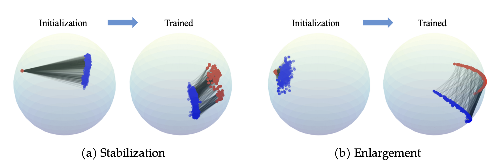
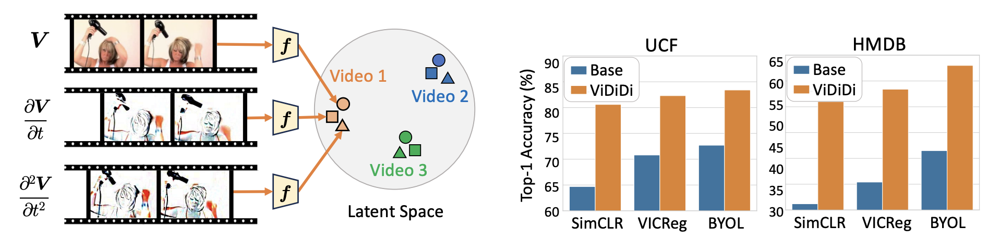
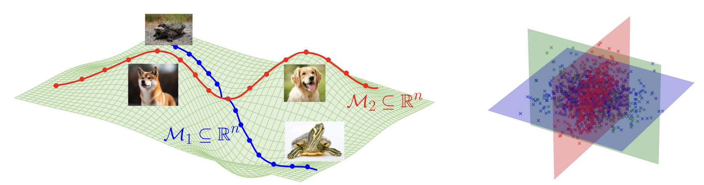
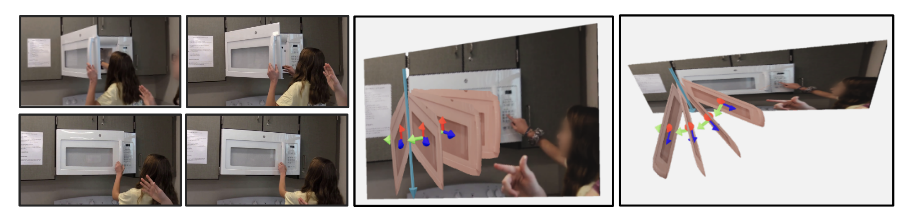
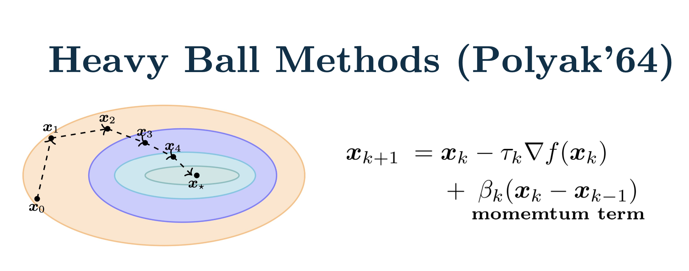
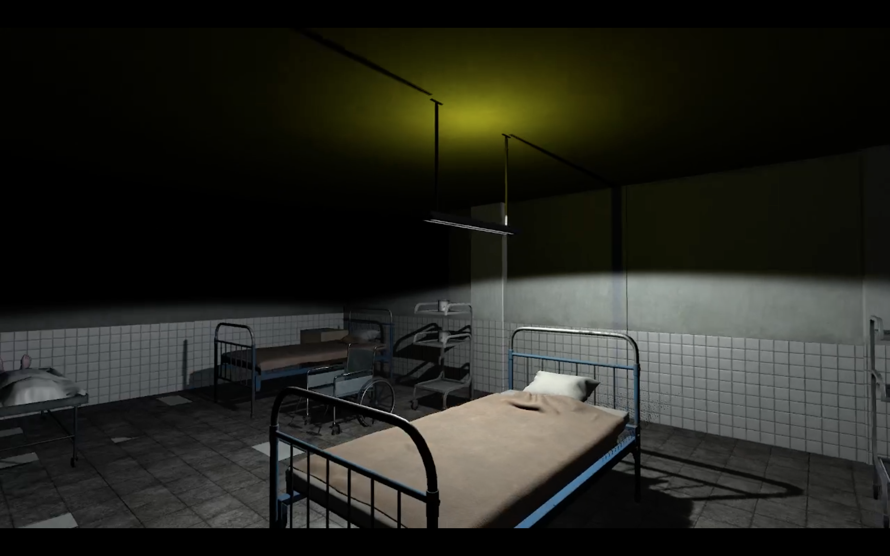
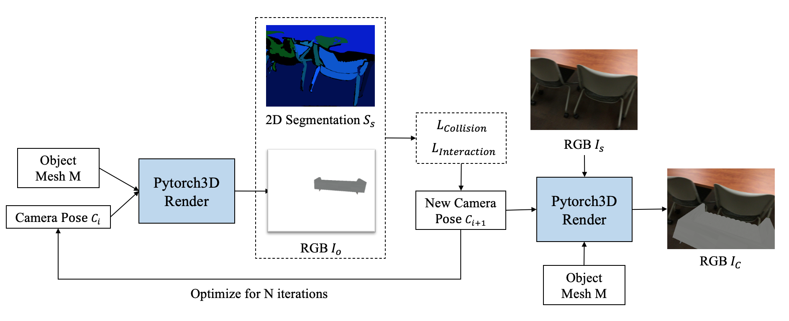
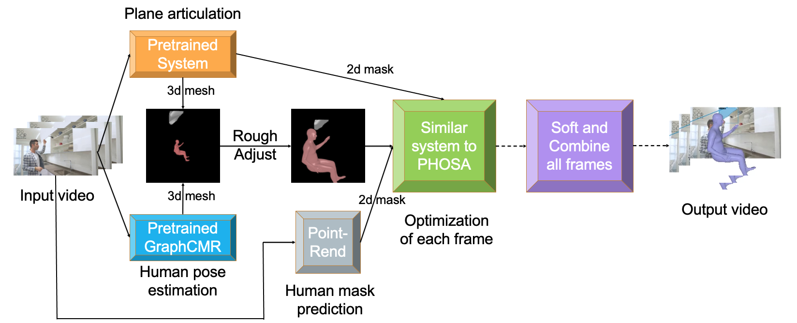
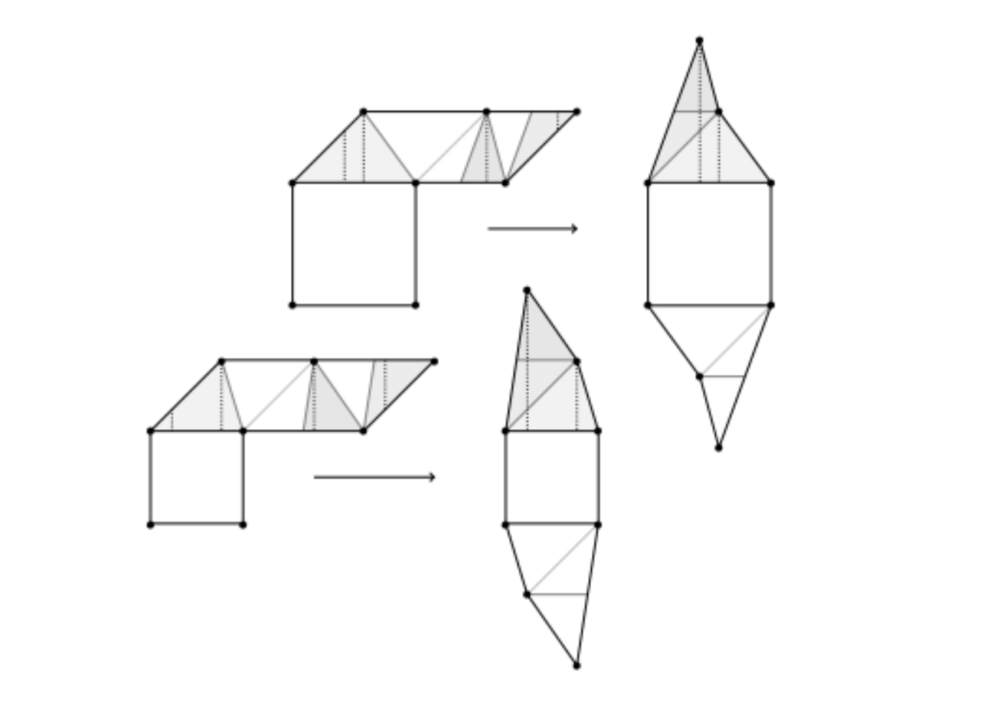
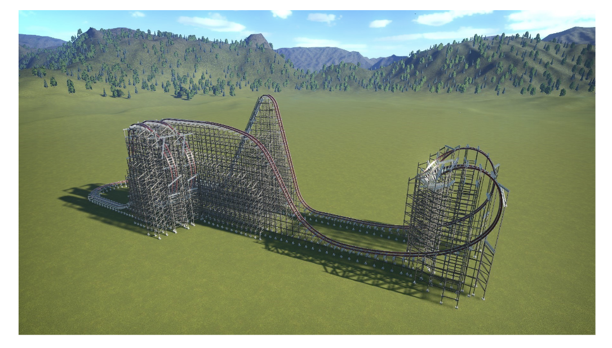

|
Siyi Chen I am an ECE PhD student in University of Michigan-Ann Arbor (2022 - Present), luckily advised by Professor Qing Qu. My research interests encompass generative models, representation learning, and their connections. I am keen on understanding their learning mechanisms and acquired information structures, and aim to utilize the theoretical understandings for unified and interpretable applications with a combined inspirations from optimization techniques, principles of physics, and human cognition. Specifically, I am exploring these questions in diffusion models, self-supervised learning, multimodality, and video learning. Before that, I obtained my B.S.E in Computer Science from University of Michigan-Ann Arbor, and my B.S.E in Electrical and Computer Engineering from Shanghai Jiao Tong University. I was luckily advised by professor David Fouhey and mentored by Shengyi Qian on 3D computer vision. Email / CV / Google Scholar / Twitter / Github |

|
News1. [03/2025] I have received the Rackham Predoctoral Fellowship! 2. [12/2024] One paper on multimodal representation learning is released! 3. [10/2024] One paper on self-superised video representation learning is accepted by NeurIPS 2024 SSL Workshop! 4. [10/2024] Two papers (paper1, paper2) on diffusion models are accepted by NeurIPS 2024 M3L Workshop! 5. [09/2024] Our work LOCO Edit is accepted by NeurIPS 2024! |
Publicaions |
|  |
Explaining and Mitigating the Modality Gap in Contrastive Multimodal Learning
Can Yaras*, Siyi Chen*, Peng Wang, Qing Qu Preprint, 2024 website / code / paper We study gradient flow to explain modality gap in CLIP, and propose new methods to mitigate modality gap while improving model performance. |

|
Exploring Low-Dimensional Subspaces in Diffusion Models for Controllable Image Editing
Siyi Chen*, Huijie Zhang*, Minzhe Guo, Yifu Lu, Peng Wang, Qing Qu NeurIPS, 2024 website / code / paper We enable localized, transferable, linear, and composable image editing on diffsion models by exploring their low-rank and locally linear semantic spaces. |
|  |
Unfolding Videos Dynamics via Taylor Expansion
Siyi Chen, Minkyu Choi, Zesen Zhao, Kuan Han, Qing Qu, Zhongming Liu NeurIPS SSL Workshop, 2024 paper Inspired by physical motion, we unfold a video clip via Taylor expansion and design an alternative algorithm for self-supervised video representation learning. Our proposed method can steer the model to dynamic parts in the video. |
|  |
Diffusion Models Learn Low-Dimensional Distributions via Subspace Clustering
Peng Wang*, Huijie Zhang*, Zekai Zhang, Siyi Chen, Yi Ma, Qing Qu NeurIPS M3L Workshop, 2024 code / paper We provide theoretical insights into the connection between diffusion model and subspace clustering, which sheds light into the transition of diffusion model from memorization to generalization. |
|  |
Understanding 3D Object Articulation in Internet Videos
Shengyi Qian, Linyi Jin, Chris Rockwell, Siyi Chen, David Fouhey CVPR, 2022 website / code / paper We propose to investigate detecting and characterizing the 3D planar articulation of objects from ordinary videos. |
Teaching |
|  |
Graduate Student Instructor, EECS 559 Optimization, 2024 Undergraduate Instructional Assistant, EECS 442 Computer Vision, 2022 |
Selected Projects |
|  |
Self-designed Game: Asylum 7
Siyi Chen, Yigao Fang, Dawei Wang, Zhongqian Duan, Ruipu Li Course Project, University of Michigan, 2022 Advisor: Austin Yarger Play it here As a team of five, we designed a horror game, Asylum 7, with Unity. |
|  |
Generate 3D Indoor Synthetic Dataset
Siyi Chen 3D Computer Vision Research, University of Michigan, 2022 Advisor: Shengyi Qian, David Fouhey code We generate 3D synthetic video dataset containing a moving object and a scene. The pose and position of the object is optimized via a differential render. |
|  |
Combined Understanding of 3D Plane Articulation and Partial Human Pose Estimation
Siyi Chen 3D Computer Vision Research, University of Michigan, 2021 Advisor: Shengyi Qian, David Fouhey code / poster We predict 3D partial human poses as SMPL meshes, predict 2D plane masks as well as 3D articulation information, and use a differential render to optimize the position and pose of the person considering 3d space interactions. |
|  |
Convex Presentations of Translation Surfaces
Siyi Chen, Andrew Keisling, Kaiwen Lu, Brendan Nell Computational Geometry Research, University of Michigan, 2021 Advisor: Chaya Norton, Paul Apisa code / poster / paper We designed and implemented beta versions of enumerating origamis in H(2) and utilized SageMath to implement the convexity test presented by Lelievre and Weiss. |
|  |
Design A Roller Coaster
Siyi Chen, Yigao Fang, Qi Shen Gold Medal Winner (Top 2%) , The University Physics Competition 2019 paper We devise a rule to evaluate the safety and difficulty level of roller coasters, propose a novel roller coster model, and give a through analysis based on Euler's method and natural axes. |
|
This webpage is based on Jon Barron. |